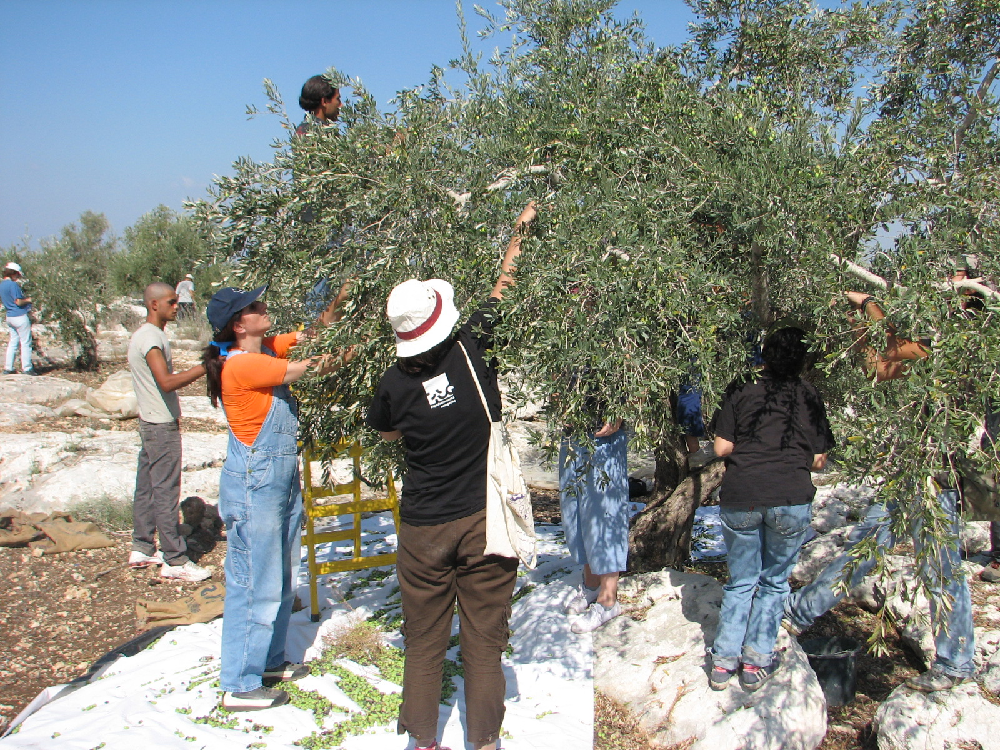

Ces semaines-ci, des vols de cigognes blanches (Ciconia ciconia) et de hérons traversent le ciel de la Békaa vers le sud, tandis que la récolte des olives bat son plein dans les montagnes et sur le littoral, du Liban à la Syrie et à la Jordanie. Ces deux événements sont moins distincts qu’il n’y paraît. Le calendrier agricole des récoltes coïncide avec celui que suivent des millions d’oiseaux migrateurs sur la voie de la Méditerranée orientale.
Notre récolte des olives : un atout à préserver

Contrairement à certains pays du sud de l’Europe où l’oléiculture est passée à des systèmes intensifs utilisant de grandes machines d’aspiration et de secouage qui travaillent la nuit sous de puissants éclairages — pratique dont des organismes officiels ont documenté la mortalité de millions d’oiseaux migrateurs endormis dans les arbres chaque année, entraînant des interdictions dans certaines régions — la récolte reste largement manuelle au Liban, en Syrie et en Jordanie, ou se fait avec un peigne ou un secoueur portatif, généralement de jour et dans un cadre familial ou communautaire. C’est déjà un véritable atout écologique dont nos agriculteurs méritent d’être crédités, plutôt que de recevoir seulement des avertissements tirés des erreurs d’autrui. Conserver ce mode de récolte, de jour, sans passer à l’aspiration mécanique ni à un fort éclairage nocturne si les opérations se développent, permettrait d’épargner au Liban les dommages constatés dans des oliveraies intensives européennes.
Un détail pratique mérite néanmoins attention : les filets étendus sous les arbres pour recueillir les olives tombées peuvent gêner les oiseaux qui se nourrissent près des troncs ou se reposent dans les herbes voisines s’ils restent tendus au sol toute la nuit sans être relevés ou vérifiés le matin. Les relever ou les replier à la fin de chaque journée de travail, au lieu de les laisser en place entre deux cueillettes, est un geste simple qui demande très peu de temps supplémentaire.
Champs de céréales : une halte énergétique sans intervention complexe
À la différence du printemps, saison de reproduction où les oiseaux se concentrent sur le nid et des ressources durables, leurs besoins d’automne sont plus simples et plus urgents : de l’énergie rapide, de l’eau et un endroit sûr où se reposer avant de poursuivre. Les champs de blé et d’orge récoltés en été rendent ce service sans frais si l’agriculteur reporte le labour de quelques semaines : les graines tombées alimentent alors les vols avant les passages resserrés en montagne. Un petit point d’eau aux bords bas dans un coin du terrain peut également attirer de nombreux oiseaux épuisés par le voyage.
Choisir le moment d’utiliser les rodenticides dans les vergers
Dans les oliveraies et les vergers, certains agriculteurs placent des poisons contre les rongeurs près des troncs ou des bâtiments de stockage. Le problème est que les rapaces, comme le faucon crécerelle (Falco tinnunculus) et les chouettes, se nourrissent de ces rongeurs et constituent une défense naturelle gratuite ; ils peuvent subir une intoxication secondaire après avoir mangé une proie empoisonnée. Il vaut mieux éviter ces produits ou en réduire l’usage au plus fort du passage, et compter davantage sur les rapaces résidents et migrateurs pour limiter les rongeurs.
Haies vivantes : un abri sans frais
Des arbustes indigènes en bordure des champs, plutôt que des clôtures de fil de fer ou de métal, offrent aux oiseaux de passage des haltes abritées du vent et des prédateurs, ainsi que des fruits sauvages constituant une autre source d’énergie à cette période de l’année.
Le danger principal reste le fusil, pas la charrue
Même avec des pratiques agricoles attentives, le premier danger pour ces vols n’est pas agricole : des tirs indiscriminés d’individus irresponsables sur des groupes entiers en migration, pratique documentée chaque année par des organisations spécialisées. Elle peut aboutir à la mise à mort massive d’espèces intégralement protégées, sans rapport avec les espèces dont la chasse est légalement permise. C’est précisément l’objet de la campagne d’automne actuelle de l’unité APU du MECSHAP, menée avec CABS pour protéger les couloirs migratoires, annoncée récemment dans Sayd.
À cette menace directe s’ajoutent d’autres dommages environnementaux : les opérations militaires de ces dernières années dans le sud du Liban ont causé une vaste destruction des forêts et des terres agricoles. Des estimations officielles libanaises évoquent quelque 16 000 hectares brûlés, dont des milliers de dounoms d’oliviers anciens, ainsi que plus d’un cinquième de la superficie agricole et boisée du Sud. Or cette région se trouve sur l’une des principales routes empruntées deux fois par an par des millions d’oiseaux entre l’Europe et l’Afrique. La perte de végétation et de haltes naturelles rend plus vulnérables des migrateurs déjà épuisés par des milliers de kilomètres de vol.
Une responsabilité partagée : le champ du paysan et le fusil du chasseur responsable
L’agriculteur qui attend quelques semaines avant de labourer et le chasseur responsable qui distingue une espèce chassable d’un vol protégé de passage servent le même objectif, chacun à sa place : un environnement vivant capable de se renouveler au fil des saisons. Aucun ne doit renoncer à son intérêt pour l’autre ; il suffit de savoir quand et comment intervenir dans les champs, afin que l’automne devienne pour les oiseaux un passage plus sûr, digne de la longue histoire du Liban et du Levant comme corridor naturel de migration.